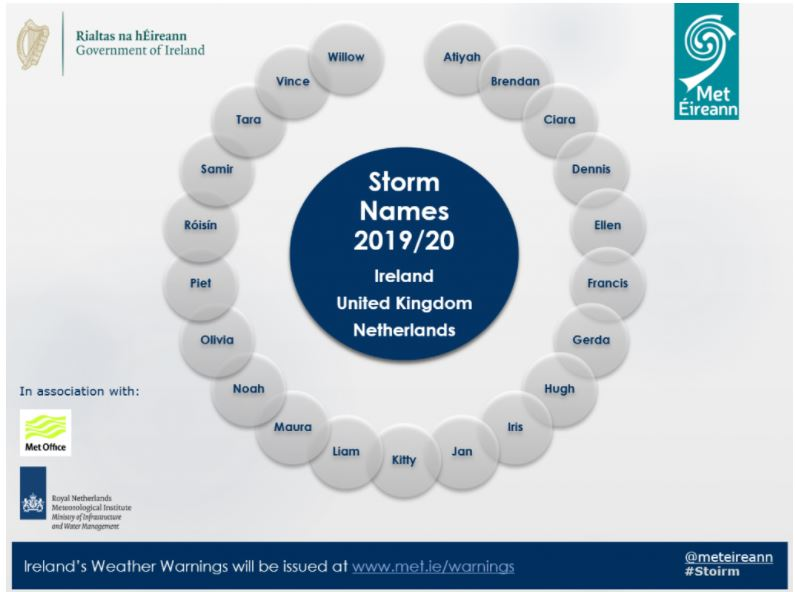
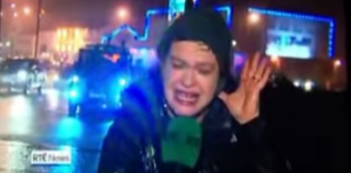

<aside class="ui segment">
  <section class="ui container">
    <h1>Weather News</h1>
    <p></p>
    <h2 class="special">Storm Names 2019/2020</h2>
    <p>Met Éireann and the UK Met Office, along with new storm naming partner KNMI (the Dutch National Weather
      Service)
      have unveiled <a href="https://www.met.ie/storm-names-announced-for-2019-20">the list of names for the
        2019-20 storm season</a>.
      First introduced by Met Éireann and the UK Met Office in 2015, the Name our Storms campaign has helped raise
      awareness
      of the threat and impact of severe weather in Ireland and Britain before it hits.
    <div class="ui icon red message">
      <i class="inbox icon"></i>
      <div class="content">
        <div class="header"></div>
        <p>Get the best news in your e-mail every day.</p>
      </div>
    </div>
    <h2 class="special">Todays Weather</h2>
    <p><a href="https://www.https://www.met.ie/latest-reports/observations">Dublin Airport</a>.</p>
    <p>
    <h2>Educational Material</h2>
    <p><a href="https://www.its.caltech.edu/~atomic/snowcrystals/frost/frost.htm">Types of frost</a>.</p>
    <p><a href="http://www.estofex.org/guide/">Forecasting convective storms</a>.</p>
    <p><a href="http://www.eumetnet.eu/members">European weather services</a>.</p>
    <p><a href="https://forecast.weather.gov/glossary.php?letter=a">A glossary of all weather terms , searchable by
      name or first letter att he bottom of the page.
    <p><a href="http://www.theweatherprediction.com/">The Weather Prediction Educational Site</a>.</p>
    <h2>Weather Podcast</h2>
    <i class="blue play icon"></i>
    <p><a href="https://www.met.ie/education/podcast">Met Eireann monthly podcast</a>.</p>
    <h2>SHOP NOW</h2>
    <a href="https://outdooradventurestore.ie/">
      
    </a>
    <a href=https://www.thegardenshop.ie/care/weather/">
      
    </a>
    <a href=https://greatoutdoors.ie/">
      
    </a>
    <a href=https://www.regatta.ie/">
      
    </a>
    <p><a href="https://www.regatta.ie/waterproof-technologies/">Waterproof Clothing Buying Guide</p>
    <p><a href="https://www.regatta.ie/footwear-buying-guide/">Footwear Buying Guide</p>
    <p><a href="https://www.regatta.ie/rucksack-buying-guide/">Rucksack Buying Guide</p>
    <p><a href="https://www.regatta.ie/activities/">Activities Guide</p>
    <h2>Weather Viral</h2>
    <p>

    <p><a href="https://youtu.be/e0MMAFKVw-g">WATCH The full video of Teresa Mannion's
      report from the end of the world</p>
  </section>
</aside>
